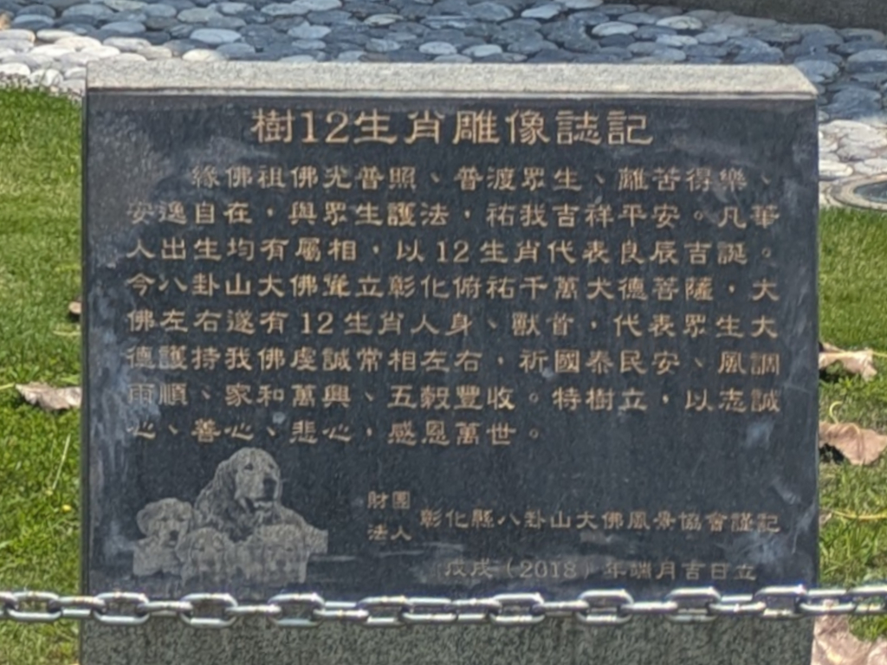
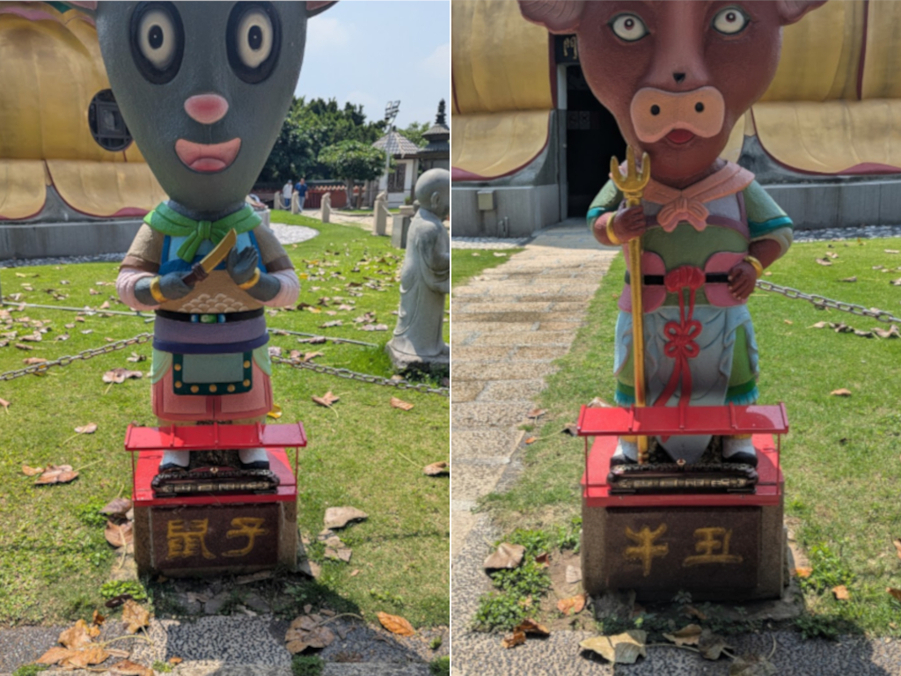
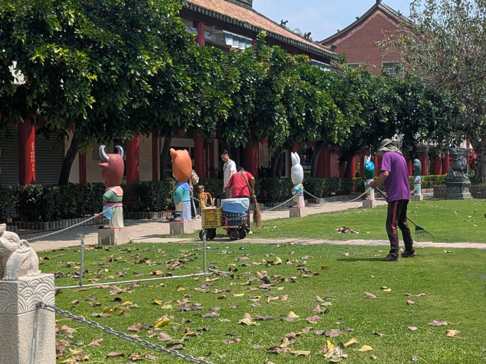

|
 The Great Buddha Zodiac Animal Inscription April 13, 2026 The above inscribed stone stood at the base of the Great Buddha statue on 八卦山 in Changhua. It reads: 樹12生肖雕像誌記 The translation is as follows: Inscription on the 12 Zodiac Animal Statues The Buddha's light shines universally, saving all beings from suffering and bringing them joy and
peace. May all beings be blessed with good fortune and safety. Every Chinese person is born with a
zodiac animal, represented by the 12 animals. Today, the Great Buddha of Bagua Mountain stands tall
in Changhua, overlooking and protecting countless virtuous Bodhisattvas. To the left and right of
the Great Buddha are 12 zodiac animal statues, one human and one animal, representing the virtuous
Bodhisattvas who sincerely support the Buddha, praying for national peace and prosperity, favorable
weather, family harmony, and abundant harvests. This inscription is erected to express sincere
gratitude and compassion to all generations. We didn't spend much time on the grounds immediately surrounding the Great Buddha, so I only got pictures of two of the 12 zodiac animal statues as we walked by. Because the sun was so bright reflecting off my camera, I could barely see the statues in front of me, so this is all I got:  On the left is the first zodiac animal, 鼠 (mouse) and on the right, the second, 牛 (bull). Some of the others can be seen in the background of this next picture of some groundskeepers sweeping up leaves, left to right, the bull (with the horns), the tiger, the rabbit, the dragon, and the snake.  I wish I had time to get all 12 (with much better quality).... |